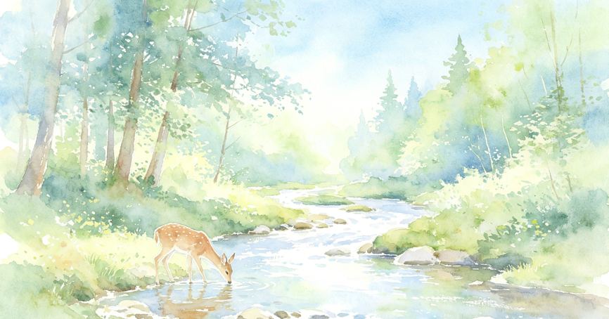

校园中的特殊群体往往面临更多的心理挑战，我们致力于为留守儿童、残障学生、贫困生、单亲家庭学生、少数民族学生等群体提供专属的心理支持与关怀服务，帮助他们建立健康的心理状态，更好地融入校园生活。
了解更多为特殊群体学生匹配专属心理老师，定期进行一对一心理疏导，建立长期信任的支持关系。
组织主题团体辅导活动，增强群体归属感，提升社交能力，减少孤独感。
开通心理援助绿色通道，优先提供咨询服务，联动学校各部门提供综合支持。
与家长/监护人定期沟通，指导家庭心理支持方法，形成家校共育的支持体系。
针对不同群体特点制作专属心理科普材料，帮助学生了解自身心理状态，学会自我调节。
通过校园宣传、主题活动等方式，提升全校师生对特殊群体的理解与包容。
点击导航栏「智能咨询师」，选择「特殊群体关怀」分类，7×24小时在线解答
九栋心理健康中心 · 专业咨询师面对面
完成专属心理测评，了解自身状态，获取个性化建议